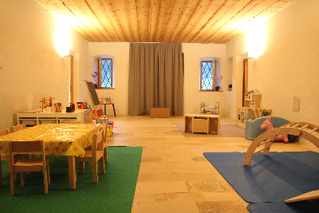

Für das Kinderbetreuungsjahr 2026/27 bleibt die Krippe aufgrund zu weniger Anmeldungen geschlossen. Ab Jänner 2027 startet voraussichtlich die Anmeldung für das Betreuungsjahr 2027/28 über die Plattform Frida. Falls Sie in der Zwischenzeit eine Betreuung für ihre Kinder brauchen, nehmen sie bitte mit der Gemeinde Gries Kontakt auf.
Wir wünschen Euch inzwischen ein gutes Jahr und freuen uns schon auf einen Neustart 2027/28.! LG Alina und Angelika